SSHD2382 · Category 07
Book Design & Print
1. Scope
This category has 21 books, divided into two main parts, "the book" and "print":
| Part | Content | Key books |
|---|---|---|
| Book design | Book structure, format, layout, covers, and the ideas and history of binding | 《書藝問道》, Haslam's 《書籍設計》, 《現代圖書設計》, 《範式革命》, 《中國古籍版本概要》 |
| Prepress | File preparation, colour management, imposition, output | 《電腦印前技術完全手冊》, 《印前校色》, 《平版印刷拼版手冊》 |
| Print & finish | Printing methods, spot colour, paper, foil stamping, embossing and debossing, binding | PRINT & FINISH, 《四色與專色》, 《燙印與凹凸》, 《書形》 |
flowchart LR ed["Editorial<br/>content, structure, pacing"] --> des["Design<br/>format, grid, type, cover"] des --> pre["Prepress<br/>bleed, separation, imposition, proofing"] pre --> prn["Print<br/>offset, digital, screen, letterpress"] prn --> fin["Finish<br/>foil, embossing, die-cut, lamination"] fin --> bind["Binding<br/>perfect, sewn, case"]
2. Core Concepts
2.1 Parts of a Book
| Part | Includes |
|---|---|
| Exterior | Dust jacket, belly band, front cover, back cover, spine, flaps, endpapers, slipcase, ribbon marker, headband |
| Front matter | Title page, copyright page, dedication, contents, preface, notes for readers |
| Body | Chapter openers, main text, plates, notes |
| Back matter | Appendices, bibliography, index, afterword |
2.2 Three Levels of Book Design (Lü Jingren)
In 《書藝問道》, Lü Jingren stresses that book design is not just "cover design" but a three-in-one whole:
He also describes the book as a carrier for the "five senses": beyond sight, there is the touch of the paper, the sound of turning pages, the smell of ink and paper, and the sense of time in reading. Kohei Sugiura's ideas, such as "the book is a universe" and "the book with many subjects", have deeply influenced book design in China and Japan.
2.3 The Evolution of Chinese Book Forms
timeline title Chinese book forms Pre-Qin to Han : Bamboo and wooden slips tied with cord Han to Tang : Silk books, scroll binding Tang : Sutra folding, whirlwind binding Song : Butterfly binding, centre column inward Yuan and Ming : Wrapped-back binding, centre column outward Ming and Qing : Thread binding, four-hole stitching Late Qing and Republic : Paperback, hardback, Western letterpress arrives
《範式革命》 records the changes of 1862–1937: lead type and lithography replaced woodblock printing, horizontal typesetting and Western binding appeared, and Lu Xun, Tao Yuanqing, Qian Juntao, Feng Zikai and others pioneered modern cover design with prints, patterns and decorative lettering.
2.4 Format and Paper
- Format: how many equal parts a full sheet is cut into. Mainland China commonly uses standard size (787 × 1092 mm) and large size (889 × 1194 mm) full sheets; for example, standard 16mo is about 185 × 260 mm and large 16mo about 210 × 285 mm. Internationally, the ISO A series is more common (A4 = 210 × 297 mm).
- Paper weight: given in g/m² (gsm). Text paper is usually 70–120 gsm, covers 200–350 gsm.
- Grain: the paper fibres should run parallel to the spine; otherwise the pages will cockle and be hard to open.
- Coated and uncoated: coated (art) paper gives sharp halftone dots and vivid colour; book paper and woodfree paper absorb ink, have a matt surface and suit long reading.
3. Principles & Methods
3.1 Printing Methods
| Method | Principle | Best for |
|---|---|---|
| Offset lithography | Oil and water repel each other; the image is transferred via a rubber blanket | Large runs of books, magazines and posters; unit cost falls as quantity rises |
| Digital | Toner or inkjet, no plates needed | Short runs, variable data, proofs |
| Letterpress | Raised areas take the ink and are pressed into the paper | Business cards, invitations; a tactile impression |
| Screen | Ink is pushed through a mesh screen | Thick ink layers, special materials, posters |
| Gravure | Recessed areas hold the ink | Long-run packaging, banknotes, fine images |
| Flexography | Flexible relief plate | Packaging, corrugated board, plastic bags |
3.2 Four-Colour and Spot Colour
- CMYK can print most photographic colours, but its gamut is limited: vivid oranges and greens, fluorescent colours and metallics cannot be printed.
- Spot colours are used when a brand colour must be exact, when four-colour cannot reproduce a colour, or when only one or two colours are needed to save cost.
- RGB colours on screen must be converted to CMYK or to specified spot colours before you hand over files, and checked against a physical colour guide—do not trust the colour on screen.
- Total ink coverage (TAC) is usually kept to around 300%. Large black areas can use "rich black" (e.g. C40 M30 Y30 K100), but small text should use K100 only.
3.3 Prepress Checklist
- Bleed: extend artwork 3 mm beyond the trim line.
- Safe area: keep important text at least 3–5 mm inside the trim line.
- Resolution: images at 300 ppi at actual print size; line art at 1200 ppi.
- Colour mode: CMYK or specified spot colours; check for stray RGB or unwanted spot colours.
- Fonts: embed them or convert to outlines; check for missing glyphs.
- Overprint and trapping: black text is usually set to overprint, so that no white gaps show if registration is slightly off.
- Page count: a saddle-stitched page count must be a multiple of 4; perfect and sewn bindings are counted in signatures.
- Proof: a digital proof or a press proof. Sign off and start the press run only after checking colour and content.
3.4 Imposition and Signatures
A large sheet printed on both sides and then folded becomes a "signature".
| Number of folds | Pages per signature |
|---|---|
| 1 fold | 4 pages |
| 2 folds | 8 pages |
| 3 folds | 16 pages |
| 4 folds | 32 pages |
Imposition means deciding the position and orientation of each page on the large sheet, so that the page numbers run in order after folding. The actual layout varies with the folding machine and the printer, so first ask the printer for an imposition dummy (a folded sample) to confirm it.
3.5 Binding Methods
| Method | Features | Best for |
|---|---|---|
| Saddle stitch | Folded in half and stapled through the spine | Thin booklets, magazines, programmes (up to about 64 pages) |
| Perfect binding | Spine milled, then glued | Paperbacks, thick catalogues; does not open fully flat |
| Sewn binding | Each signature sewn with thread, then glued | Durable books, art books |
| Case binding | Hardboard case; can have a rounded spine and headbands | Collector's editions, art books |
| Exposed spine | Spine left uncovered; opens flat to 180° | Design books, notebooks |
| Stab binding | Chinese-style thread binding | Ancient books, cultural products |
| Accordion | A long sheet folded back and forth | Long images, exhibition booklets |
| Wire-o | Opens completely flat | Calendars, manuals, cookbooks |
3.6 Finishing
- Foil stamping: heat and pressure transfer metallic or coloured foil onto the paper; a copper or zinc block must be made.
- Embossing / Debossing: male and female dies press the paper up or down. This can be done in the same pass as foil stamping ("foil embossing").
- Spot UV: varnish is applied to chosen areas, creating a gloss-and-matt contrast.
- Die-cutting: a cutting die cuts special shapes or windows.
- Lamination: gloss, matt or soft-touch film. It protects the surface but makes recycling harder.
《燙印與凹凸》 advises that finishes should serve the content: choosing one or two finishes that echo the theme is more powerful than piling them all on.
4. Selected Figures
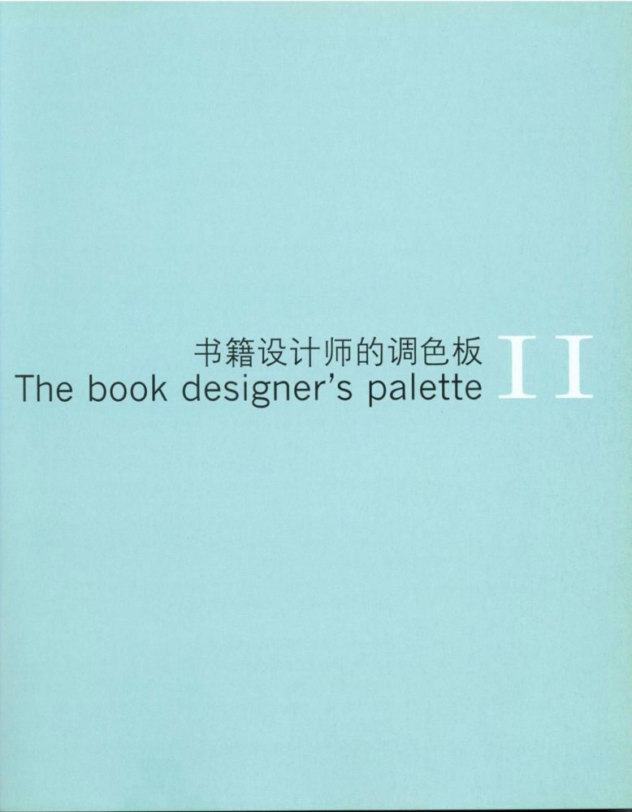
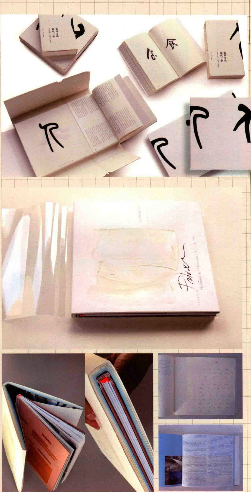
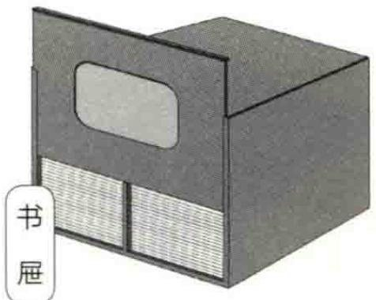
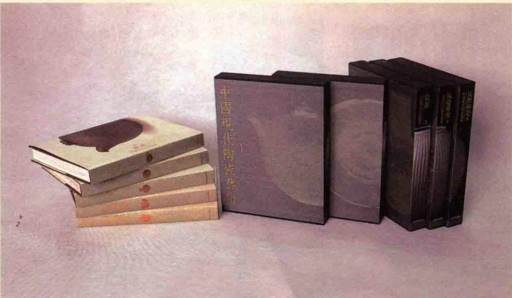
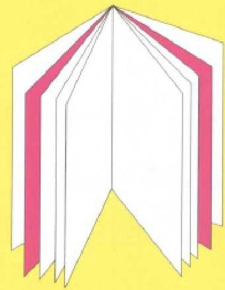
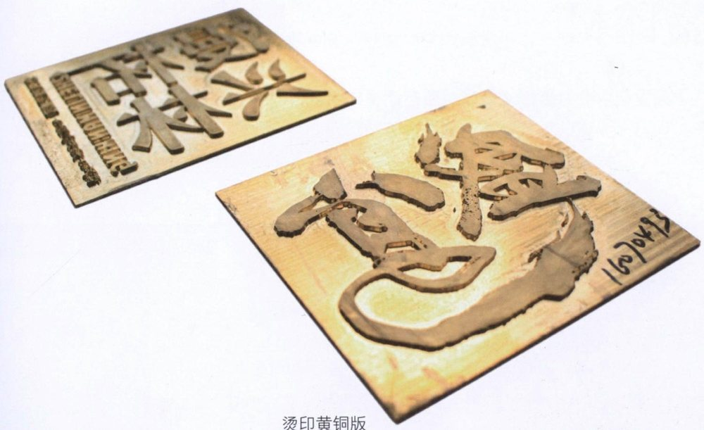
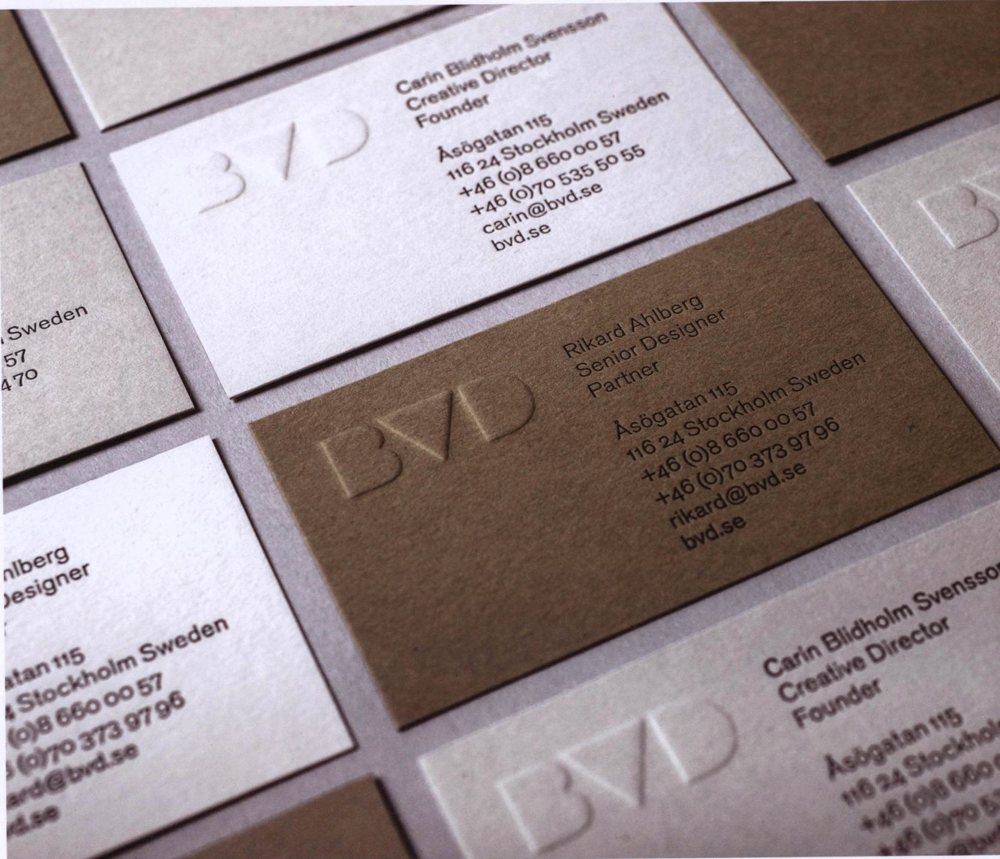
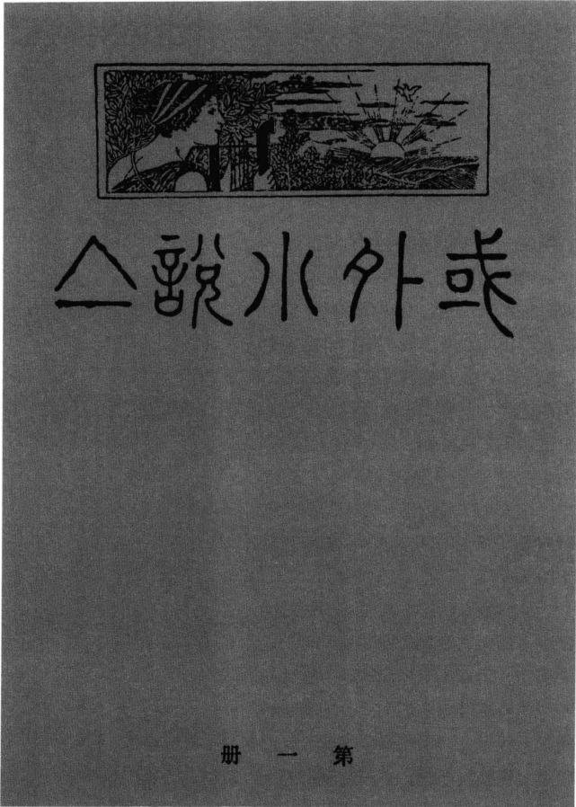
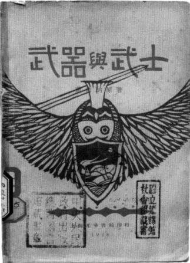
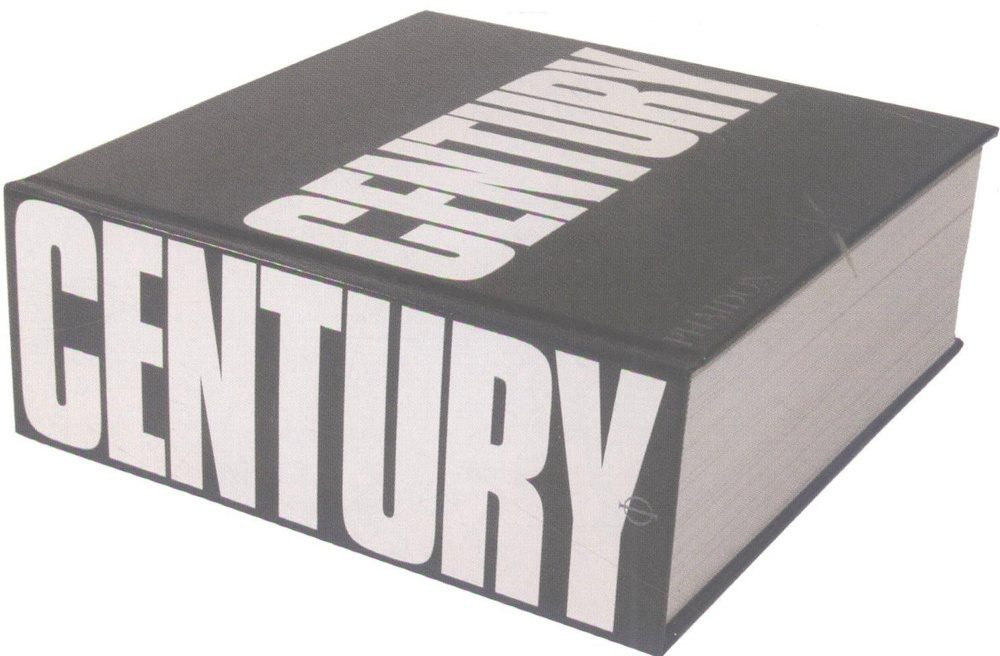
5. Source Bookshelf
Suggested reading order: Haslam, 《書籍設計》 (introduction to structure) → Lü Jingren, 《書藝問道》 (ideas) → PRINT & FINISH (techniques) → 《平面印刷色彩：四色與專色》 → 《範式革命》 (history).
Show 21 titles
- 2015 中國最美的書 - [071]書籍設計-安德魯 - [128]書形：138種創意書籍和印刷紙品設計 - [182]如何設計一本畫冊 - [196]平面印刷色彩：四色與專色 - [235]國際平面設計基礎教程：PRINT&FINISH印前印後 - 世界書籍藝術流派 - 中外裝幀藝術論集 - 中國古籍版本概要 - 出版物設計完全手冊 - 印刷工藝：燙印與凹凸 - 印前校色實用教程 - 印前輸出培訓參考：全綵教程-200P - 嶄新印通拼版教程 - 平版印刷拼版手冊 - 平面設計及印刷業務人員常識備忘手冊 - 書籍設計 - 書藝問道 - 現代圖書設計 - 範式革命：中國現代書籍設計的發端 1862-1937 - 電腦印前技術完全手冊（第2版）6. Study Cues
- Take a hardback and identify its parts: dust jacket, endpapers, title page, spine, headband, ribbon marker and so on.
- A 240-page book uses 0.1 mm text paper. Roughly how wide is the paperback spine? (Answer: about 12 mm, plus the thickness of the cover stock.)
- Explain why the page count of a saddle-stitched publication must be a multiple of 4.
- When should you use spot colour rather than four-colour? Give two examples.
- Check your assignment files against the prepress checklist: do the bleed, resolution, colour mode and fonts all pass?
- Compare butterfly binding, wrapped-back binding and thread binding: which way does the centre column face, and how do you turn the pages?
7. Each Book
Each book in the bookshelf is described below. Every title above links to its section.
2015 中國最美的書
Scope. This is the catalogue of the "Most Beautiful Books of China" for 2013 to 2015. It also includes letters from the judges and the Chinese books from these years that went on to win in the "Best Book Design from all over the World" competition. Each selected book has its own entry. Use it to learn how to describe a whole book: it helps you build judgement before a book design assignment, but it is not a step-by-step manual.
Main ideas
- The book is arranged by year: 2013, 2014, 2015. Each year first lists the jury, then introduces the winning books one by one.
- The judges' letters come from different places, including Lü Jingren and judges from Germany, Japan, Korea, Hong Kong, Macau and Taiwan. The standards come from many sides, so read for the one point each judge cares about.
- The subjects of the selected books already state their design problems: Chinese characters, manuscripts, local gazetteers, art books, poetry collections, exhibition catalogues. Each has its own reading task.
- "Most beautiful" lies in the book as a whole: the order, the materials, and how text and images are put together. 《兔兒爺丟了耳朵》, 《平如美棠》, 《上海字記》 and 《漢字大爆炸》 are all whole-book solutions.
- The exercise for reading this catalogue is to write, in one sentence, which whole-book decision makes someone else's book beautiful.
Methods
- Choose one book from each of the three years, and write whether its beauty lies in structure, materials or typography.
- Pick one judge's letter, compare it with one winning book, and see whether the book meets the standard the judge describes.
- When you make your own book, borrow a question (how to present a manuscript, how to bind an illustrated story) and leave the style with the original book.
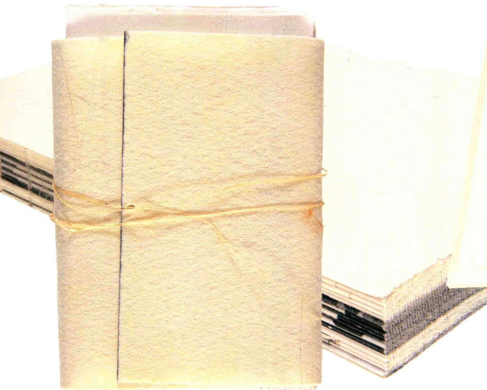
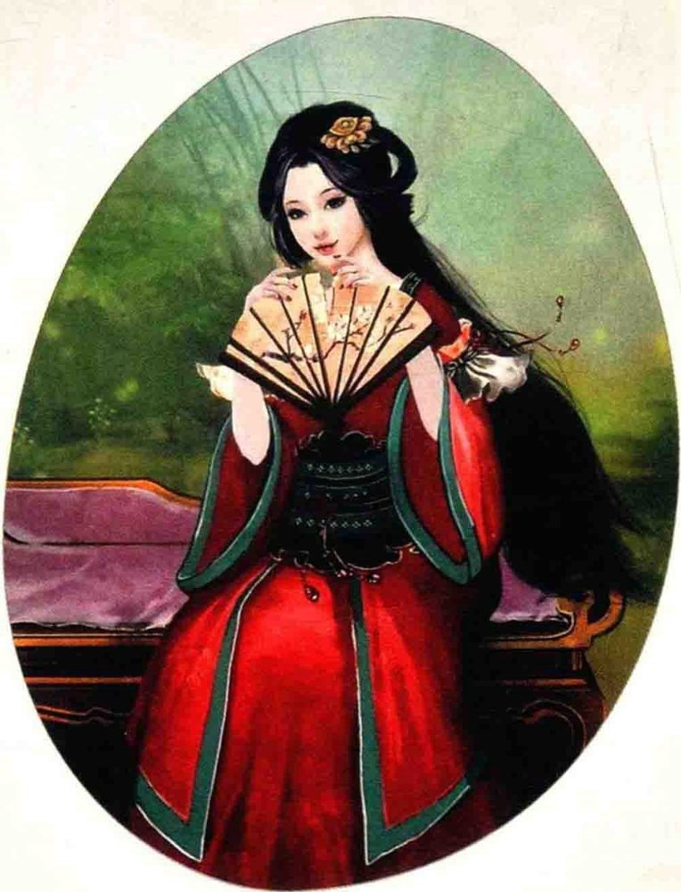
Study cues
- Choose one selected book and say in one sentence where in the whole book its beauty lies.
- Among the judges' letters, which judge's standard is closest to the point you would insist on when making a book? Write the book title and your reason.
書籍設計-安德魯
Original title: Book Design
Author: Andrew Haslam
Scope. This is a textbook on book design. The first part asks what a book is, from the history of its carriers to the commercial value of publishing. The middle part is the designer's palette: grid, printing, type, editorial structure, images and covers. The last part moves into production, with paper as one of its chapters. Use it to build a checklist of the decisions you have to make when designing a book.
Main ideas
- The form of the book moved from the scroll to a stack of pages you can turn. The history of paper runs from papyrus and Chinese papermaking to its later spread to Europe; for movable type, the book covers clay type in Korea, woodblock printing in China and Gutenberg's lead type.
- Dictionary definitions stop at "portable sheets of paper" and "words written on paper". The author's own definition adds time: a book must preserve knowledge, speak to literate readers, and be portable.
- Movable type turned copying into repeatable production. While reproducing content, early printers also decided the typeface and the layout.
- The palette breaks design into parts: grid, print colour, type, editorial structure, image communication, covers and jackets. Each one is a separate choice.
- The barcode on the back cover has specific constraints: it must not be covered by the flaps or inner cover, its size should be about 85% to 120% of the original, it must be black bars on a white ground, and it needs about 2 mm of clear space around it.
Methods
- First write your own definition of "book" in one sentence, then compare it with the seventh definition in the book to see whether you left out portability, preservation or communication to readers.
- Before designing a book, fill in a palette: grid, type, images, cover, paper. Write only one decision and one sentence of reasoning for each.
- Take the back cover of a paperback and check the barcode against the book's four rules.
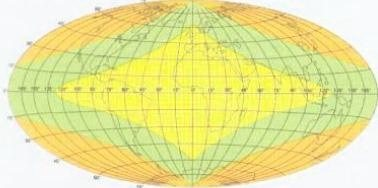
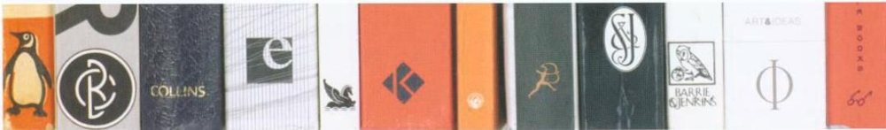
Study cues
- Compared with "words printed on paper", which two extra layers of meaning does the author's definition of a book add?
- Check the back cover of a paperback: is the barcode covered by a flap, is it black on white, and is there clear space around it?
書形：138種創意書籍和印刷紙品設計
Scope. This is a catalogue of work showing creative forms for books and printed matter. Each entry usually states the type of work, client, designer, specifications and techniques, followed by a short text on where the concept came from. Use it to learn "how form carries out a concept", and to practise writing a complete specification for a piece of work.
Main ideas
- The Murcia tax annual report turns "gathering" into a piggy bank, and the way it opens corresponds to taxes being put into public services. The form itself is the sentence.
- The techniques field matters as much as the concept field: offset printing, clay casing, screen printing, blind embossing, die-cutting, thread binding, laser engraving and acrylic are all listed beside the work.
- "Book forms" here include annual reports, promotional brochures, magazines, picture books and even an edible exhibition booklet. The test is how the printed piece is held in the hand.
- 《正負》 aims to be both artistic and informative, focusing on details of typesetting that are easily overlooked; it is produced with screen printing and inkjet printing.
- Specifications are always given in millimetres. When comparing two pieces, compare their sizes first, then their concepts.
Methods
- For each piece that catches your eye, copy just four lines: type of work, specifications, techniques, a one-sentence concept.
- If the concept is a metaphor (a piggy bank, the supply chain from tree to paper), check whether the way it opens or its material really acts out that metaphor.
- Use the same four lines to write a specification card for your own assignment.
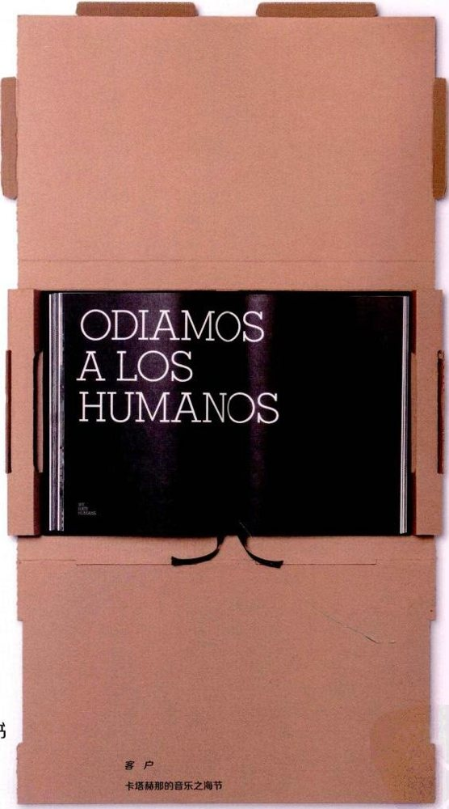
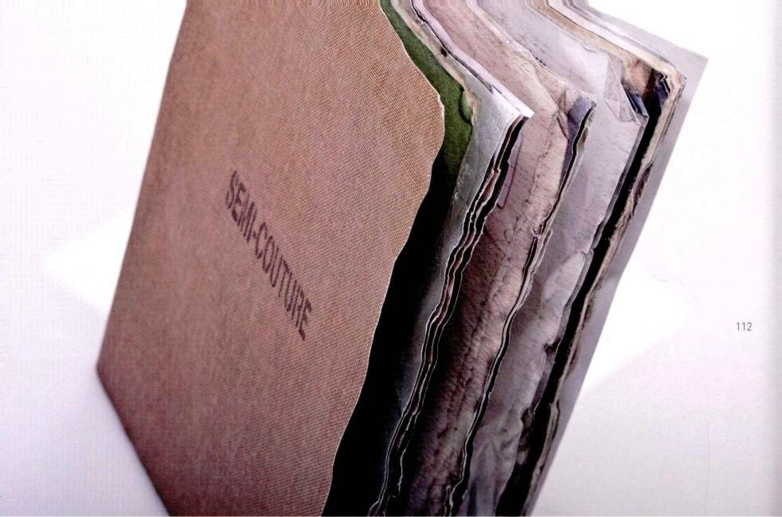
Study cues
- Fill in a card for the "piggy bank" annual report using "type, specifications, techniques, one-sentence concept".
- Choose one piece and explain what is left of the concept once you take away its special material or its way of opening.
如何設計一本畫冊
Scope. This book is about brochures: corporate image brochures, product brochures, leaflets, promotional brochures and commemorative albums. The first part covers the types. It then breaks design down into basic elements, production techniques and market factors, using cases such as the Pfizer annual report, a Richard Serra exhibition booklet and LARDBOOK to show what each layer does.
Main ideas
- Elements come in four layers. Conceptual elements are things like point, line and plane, which can be sensed but are not necessarily drawn; visual elements are size, shape and colour; relational elements are direction, position, space and centre of gravity; practical elements are meaning, purpose and function.
- A good brochure must do four things at once: combine company, market and product into one whole, hold up visually, stay consistent from front to back, and have a clear display function.
- The type decides the task. A corporate image brochure, a product brochure, a leaflet and a promotional brochure each need people to remember a different thing.
- The cases write the task into the layout. The Canon annual report puts product features alongside portraits of its people; the Pfizer annual report uses a clean layout to present the company's philosophy and the character of its industry.
- Production techniques get their own section. The elements decide the image; the techniques decide how the brochure is finally made.
Methods
- Before working on the layout, write down the type and the one function this brochure must fulfil.
- Take one spread and write one sentence for each of the four layers: conceptual, visual, relational, practical.
- Put the cover, the first spread and the last spread side by side, and check that they belong to the same book.
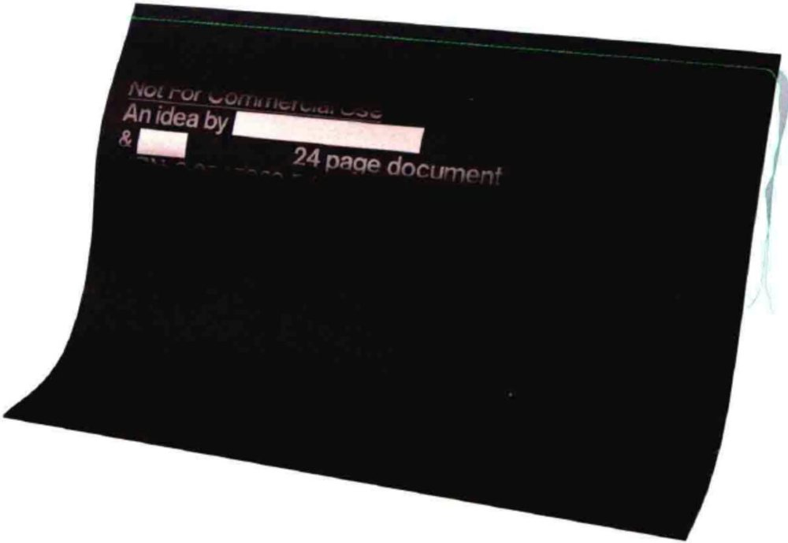
Study cues
- Use the four layers (conceptual, visual, relational, practical) to describe one spread of a brochure you have to hand.
- What is the one thing a corporate image brochure must make people remember, and how does that differ for a product brochure? Give one example of each.
平面印刷色彩：四色與專色
Scope. This is a casebook on how printed colour works. It covers packaging, posters, brand identity and books, with a separate section on stochastic (FM) screening. The focus is the job that four-colour and spot colour each do, and how paper changes the same colour. Use it when choosing colours, to write down "which fact does this colour stand for".
Main ideas
- Colour can carry out a product's metaphor. Three books of "food for the mind" are made into tins, with labels that imitate the nutrition panels on food cans. Tea-tasting wrapping papers use tea-set motifs or the geometric shapes of sweets.
- Brand facts can fix the shape and the number of colours. The "tre" (three) in tre·tea becomes a triangular prism, with one bird on each of its three faces: a white bird for white tea, a black bird for black tea, and a multicoloured bird for tropical tea.
- Spot colours and special papers each have a target. Ordinary gifts use spot gold, children's gifts use colourful illustrated paper, and wedding gifts use blue-green. Another example prints information in fluorescent orange on black Plike paper, and switches the inside pages to Rives paper so the illustrations look brighter.
- A sense of place comes from a very short set of colours. Hornhuset uses Mediterranean sea blue, bright yellow and ivory white, to match its small dishes and takeaway food.
- The key visual for an arts festival also needs a source. Ars Cameralis draws a unicorn and a rhinoceros in a way close to stained glass, illuminated manuscripts and mosaic, and the colours serve a fairy-tale experience.
Methods
- Before choosing a colour, write one sentence on "which fact this colour is": the type of tea, who the gift is for, or the climate of the place.
- Mark the colours that must not drift (metallics, fluorescents, brand colours that must stay stable) as spot colours, and leave the rest to four-colour.
- When you study a case, note the paper name and the ink as well, not just a colour name.
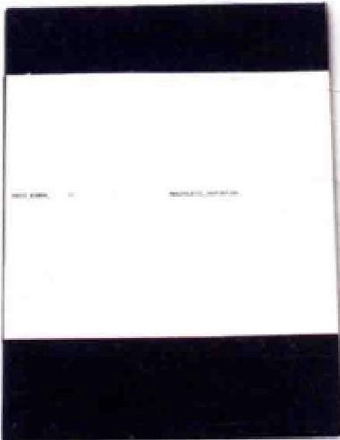
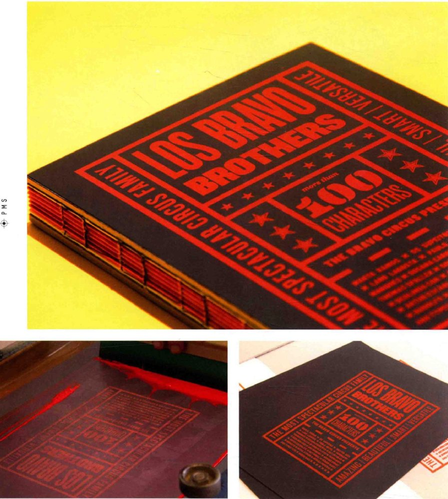
Study cues
- For the three birds of tre·tea, which brand fact does each colour match, and which fact does the shape of the pack match?
- If one colour has to stay stable across different papers, would you print it in four-colour or as a spot colour? Explain with an example from the book.
國際平面設計基礎教程：PRINT&FINISH印前印後
Original title: Basics Design 06: Print and Finish
Scope. This is a basic textbook on prepress and finishing. Its chapters cover, in order, substrates, printing technologies, printing processes, finishing, binding, and how these techniques come together in one piece of work. Each case names the client, the designer and the reason for choosing that process. The opening pages explain how to read the book using the navigation bar, the introductions and the project information.
Main ideas
- A substrate is the material that carries the text and images. It can be ordinary paper, textured specialty paper or board, and can even extend to cups and T-shirts. The choice must suit both the physical properties of the material and the purpose of the project.
- A colour magazine needs high-quality images, while a newspaper thinks about cost first, so the two ask different things of paper. The colour, weight and texture of the paper change the final visual effect, and a special paper can even become part of a corporate identity.
- Decide the substrate at the very start of the design. Finishing needs a reason: the headings of a Dutch health handbook are embossed so that the white letters gain thickness over the images.
- Edge decoration was originally meant to make a book last longer. Using it on VH1's time-sensitive printed matter deliberately sets the process against the character of the medium.
- Perforation can turn an envelope and its pages into one piece. The reader tears along the holes, so no separate envelope is needed.
Methods
- On your first sketch, write down the substrate and one finishing process, with one sentence on why you chose it.
- Record your own projects in the book's case format: client, process, why.
- Ask whether the process makes the piece last longer, saves a component, or deliberately contradicts the content.
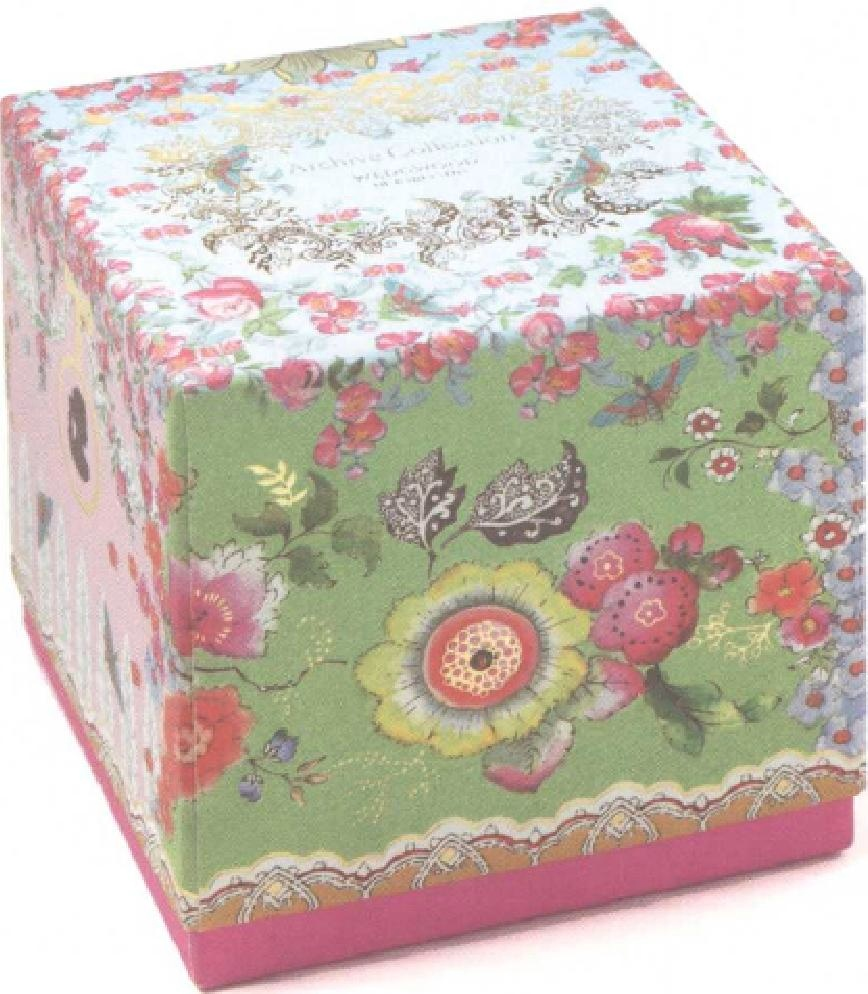
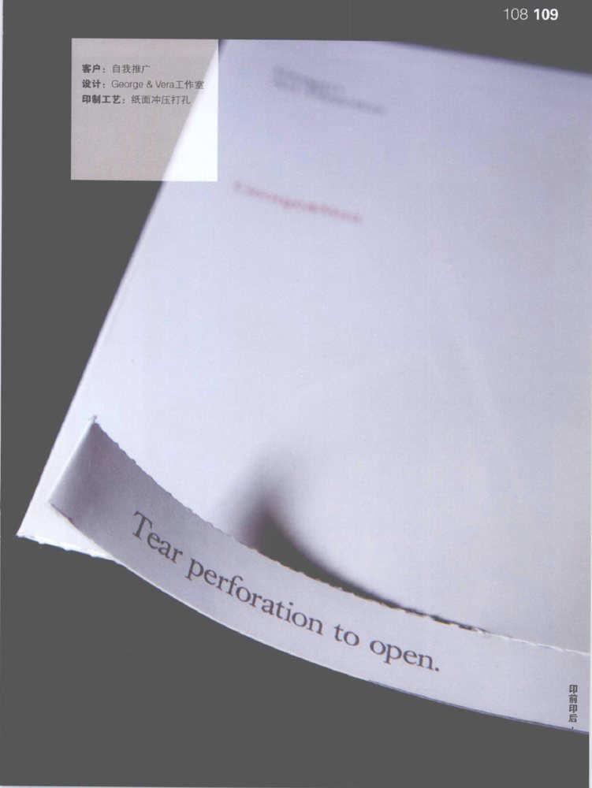
Study cues
- Which two things must you consider together when choosing a substrate? Write one sentence each about a colour magazine and a newspaper.
- Choose one finishing process for your project, and say whether it solves a problem of lifespan, of cost, or of a contradiction in meaning.
世界書籍藝術流派
Author: Yu Binnan
Scope. Yu Binnan introduces twentieth-century book art by country and by genre. Germany, Britain, the United States, France, Switzerland and Japan each get a chapter, followed by children's books and literary books. The thread running through the book is how illustration, type, layout and cover were brought back together into one book. Use it to build a historical map of book art.
Main ideas
- The movement that began with William Morris asked for the book to become a whole again, made of type, layout, illustration and cover. Early Jugendstil stressed flatness, the movement of line, and illustrations embedded in the layout; Edward Gordon Craig and Heinrich Vogeler are the examples given.
- Phototypesetting could enlarge, reduce, widen, narrow, slant and freely arrange letters, which metal type could hardly do. This photographic layout was first used in advertising, dust jackets, covers and title pages, and was still seen as experimental at the time.
- "Fashionable" layouts have a touch of humour and are used for special occasions. They are of almost no use for body text that needs slow reading and careful thought. Massin's design for 《貧苦的女歌手》 is cited as the most memorable example.
- After the revival of illustration, Max Slevogt's lithographs for 《浮士德》, whether in the margins or filling the page, had to set off the text and be set off by it in turn. George Grosz, Alfred Kubin and Janusz Grabiański took the subject matter from satire to fairy tale.
- Expressionism is traced from the Die Brücke group, founded in Dresden in 1905. The book places it in the history of book illustration, where exaggeration and distortion express dissatisfaction with the way things are.
Methods
- Pick one illustrator and note whether the images hug the edge of the text, fill a whole page, or overlap the type.
- Split your own project into "dust jackets and advertising" and "body text that needs slow reading", and allow a different amount of freedom in each.
- When you cite a school or movement, name one book and one visual rule, not just the name of the movement.
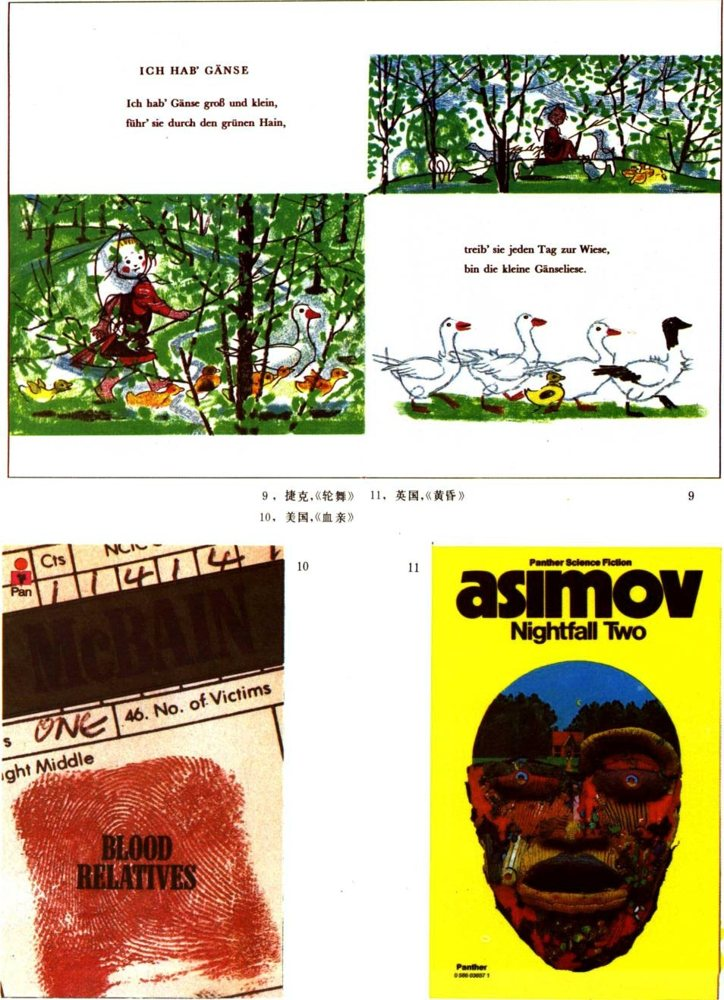
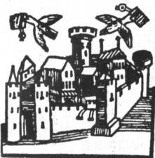
Study cues
- What freedoms did phototypesetting give letters that metal type could hardly offer? According to the book, on which parts of a book was this freedom first used?
- Use the principle that "illustration must form a whole with the layout" to check an illustrated book you have seen: do the images and the text set each other off, or does each go its own way?
中外裝幀藝術論集
Scope. This is a collection of essays on book design. Its core chapters describe how Lu Xun treated blank pages, deckle (uncut) edges, type and covers, and how he worked with Tao Yuanqing and Xu Qinwen. Later essays discuss Fan Yixin and Ma Rujin, the relationship between art editors and text editors, and the tension between the spirit of the times and national character. Use it to think about how strong an idea a cover can still have when it is built mainly from text.
Main ideas
- Lu Xun cared about the blank endpapers at the front of a book and about generous head and foot margins. A page crammed with black text, on paper that smells of ink, feels oppressive. Head and foot margins differ between China and the West: Chinese books traditionally make the head margin larger than the foot. What matters is leaving room for the reader to write.
- He promoted uncut deckle edges, calling himself an early member of the "deckle-edge party", and was particular about printing, platemaking and paper. He objected to a line beginning with a punctuation circle, a dotted line, or the second half of a bracket.
- His covers are mostly built from text, with variety coming from calligraphy and seal carving. 《吶喊》 puts a title that looks carved with a knife on a black block, printed on a deep red ground, and the red is described as a heavy force. The red of 《桃色的雲》 is like a morning glow, paired with band-shaped ornaments in the style of Han dynasty pictorial art.
- He gave Tao Yuanqing the content and references, but also allowed the cover to stray from the subject and develop freely. Before printing, he waited until Tao Yuanqing was satisfied before the plates went on press.
- Other essays in the collection break the idea down into subject, intent and inspiration, then discuss black and white, colour and means of expression, and argue that book design, as a combined art, still keeps its own independence.
Methods
- Set the head and foot margins and the endpapers first, and state whether this blank space is there for breathing room or for readers to write in.
- Make a cover built mainly from text: one background colour, one treatment of the title, and one sentence on what this colour does emotionally.
- If you work with an illustrator, write down one thing you will not restrict.
Study cues
- When Lu Xun said new books had "no room to spare", which parts of the page did he mean? How does this relate to wanting to write in a book while reading?
- 《吶喊》 and 《桃色的雲》 both use red. What does each red do? Why could they not be swapped?
中國古籍版本概要
Scope. This is an introduction to the editions of ancient Chinese books. It starts from the origin of the word banben ("edition"), moves through manuscripts, hand copies and the debate over when woodblock printing began, then covers colour-overprinted and other kinds of editions, and ends with how to judge whether an edition is genuine and how good it is. Use it to learn to describe a copy clearly by its line format and page layout when you look at facsimile pages of old books.
Main ideas
- Ban originally meant a wooden slip shaved for writing on, and ben was the copy held in the hand when collating texts; in the Han dynasty most books were bamboo slips and silk. By the Northern Song the two were already used together as banben, and Ye Mengde said that before the Tang all books were manuscripts, while printed books gradually increased after the Five Dynasties.
- Ye Mengde's worry was that once books were easy to obtain, scholars would read and recite them less carefully; and since people took printed editions as the standard, errors in old copies could no longer be corrected. In this book, "edition" covers both manuscripts and printed books.
- The book traces the form of the book from bamboo and wooden slips bound into rolls. On when woodblock printing began, it sets out the Han, Six Dynasties, Sui and Tang theories side by side, citing evidence such as the ban on printed calendars in the ninth year of the Taihe era and the copying and printing of the poems of Yuan Zhen and Bai Juyi, and lets the evidence line itself up.
- Judging an edition means reading the page: lines per half-leaf, characters per line, whether commentary is in double lines, black or white fish-mouth (heikou or baikou), border lines, the centre fold column, taboo characters and binding style. The book records the Yuan dynasty Peng Yinweng edition as ten lines per half-leaf, twenty-one characters per line, black fish-mouth and double borders.
- The purpose of judging is written into the chapter title: to tell genuine from fake and good from poor, with real examples of detecting forgeries.
Methods
- When describing a facsimile page of an old book, follow the book's checklist: lines per half-leaf, characters per line, black or white fish-mouth, single or double borders, and whether there are taboo characters. Mark any item you cannot see as not visible.
- When you read that "printing began in a certain year", first ask which piece of evidence the claim rests on.
- Record manuscripts and printed books as two families within editions, and note how each was reproduced.
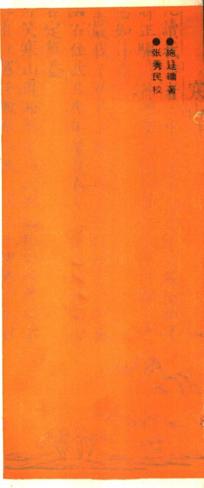
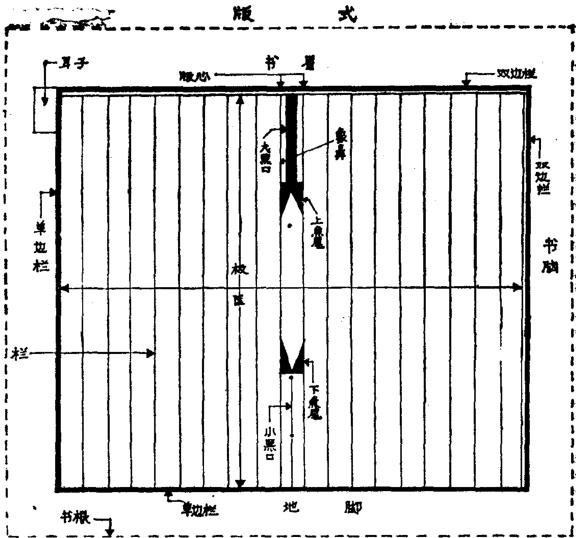
Study cues
- Why does "edition" in this book include both manuscripts and printed books? What did Ye Mengde fear readers would lose once printed books became common?
- Take a facsimile page of an old book and write down the lines per half-leaf, the characters per line, and whether it has a black or white fish-mouth. Mark any item you cannot see.
出版物設計完全手冊
Original title: Publication Design Workbook: A Real-World Guide to Designing Magazines, Newspapers, and Newsletters
Scope. This is a handbook that runs from concept to printed piece, in translation. Its contents go from "designing for reading" to the history of printing since Gutenberg and publications in the age of pixels, dealing in between with the perception of colour and with choosing and mixing typefaces. Use it to write a concept checklist before you start laying out pages.
Main ideas
- An idea starts from content, information and organisation. The design brief is a concept checklist, and the visual sources should be built on the main function of that idea.
- An idea does more than one job. Besides its main function, it must resonate with readers and carry the brand's influence. Write these three layers separately.
- Colour is split into form and psychology. Form deals with how people perceive colour; psychology deals with how social habits shape that perception.
- The typography chapter treats choosing and mixing together. It cares about proportion and freshness in reading, not about collecting lots of typefaces first.
- Printed matter is viewed across time: the 42-line Bible shows how early movable type changed the book, and later sections cover space, contrast, asymmetry and the grid. A carefully designed printed piece may outlive the event it was made for.
Methods
- Before making visuals, write three lines: the information readers must get, the resonance you hope to create, and the one thing the brand must not lose.
- When choosing type, state who is reading and for how long at a stretch, then decide type sizes and how to mix typefaces.
- Ask which part of this printed piece must still be readable in ten years, and make the hierarchy of that part slower and clearer.
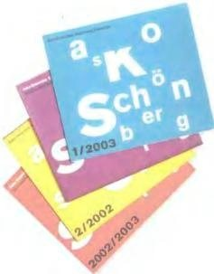
Study cues
- Into which layers of function does the book divide a design concept? Write one sentence for each layer about a booklet you are working on.
- If this printed piece outlives the event itself, which part deserves to be made more slowly? Why?
印刷工藝：燙印與凹凸
Scope. This book is entirely about foil stamping and embossing. The first part covers anodised aluminium foil, stamping dies, stamping machines, temperature and workflow, and the differences between cold foil, 3D (sculpted) foil and holographic foil. The second part uses wedding invitations, wine labels, tea brands and art exhibition visuals to show how a finishing process becomes the focus of an image.
Main ideas
- Gold foil can be used on paper, wood, plastic and leather. The book lists two functions: raising recognition and added value, and strengthening protection against counterfeiting.
- Embossing is common on books, magazines, cards and packaging. Besides explaining its uses, the book shows close-up details of a hand-cranked embossing press.
- A process should carry out a fact in the content. One wedding invitation drops the usual bold red and gold for silver foil on peach card, with the dragon and phoenix reduced to lines. Harlow, the birthplace of fibre optics, uses holographic foil that splits into many colours in the light.
- Cold foil, 3D foil and holographic foil are different tools. A rice wine brand uses 3D foil to raise a fine-line "map of wine makers", a tea brand uses 3D foil to show the texture of tea leaves, and an art exhibition uses laser foil to strengthen its vivid patterns.
- Quality is tied to temperature and workflow. A metallic effect that looks right in the artwork still has to survive the die and the temperature before it holds up.
Methods
- Use foil or embossing only on one element that must become the focus: a year, a word, or a logo. Keep everything else flat.
- Next to the sketch, write the fact that this metallic colour or holographic effect stands for, such as celebration, light, or long life.
- When you cannot do real foil stamping yet, mark on the artwork whether you mean hot foil, cold foil, blind embossing, 3D foil or holographic foil.
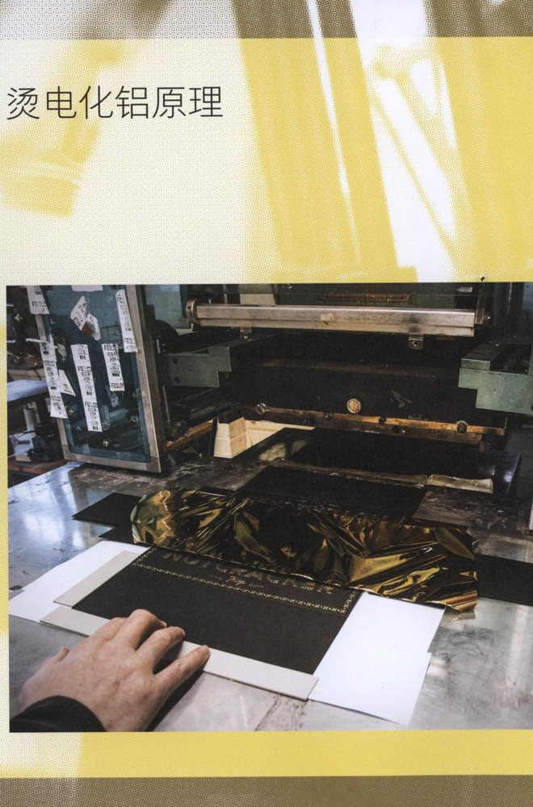
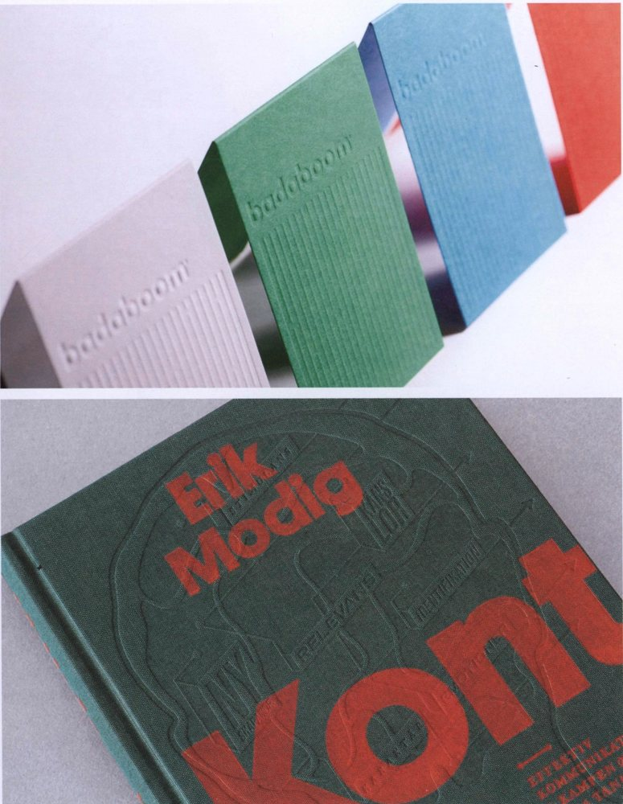
Study cues
- Which quality in the content is each of hot foil, 3D foil and holographic foil best at stressing? Give one brand from the book for each.
- After the wedding invitation case drops bold red and gold, which part of a traditional invitation's work does the peach card take on, and which part does the silver foil take on?
印前校色實用教程
Scope. This is a hands-on tutorial on prepress colour calibration. It goes from a stable viewing environment to standard light sources, then step by step to making an ICC profile for your monitor. The aim is to make the screen and the proof comparable. Use it to set up fixed viewing conditions before sending work to print.
Main ideas
- Calibrate in a stable environment. The surroundings should be as close to neutral grey as possible, and the ambient light should be soft, steady and without an obvious colour cast, and should not shine directly on the screen or into your eyes. Daylight is unstable, so close the doors and windows while calibrating.
- To compare a proof with the screen, you need a lamp that lights only the proof: it should not shine into your eyes or affect the screen, its colour temperature should be 5000K or 6500K, its colour rendering index above 90, and its light bright enough and even.
- ISO 3664 sets the standard colour temperature for viewing prints at 5000K. The book notes that many printers and output centres in mainland China still use 6500K. For designers, the key is to stick with one for the whole job, because clients often view proofs where there is no standard light booth.
- Standard illuminants A, B and C have different colour temperatures. The book explains that artificial light sources that truly match D65 are still hard to make accurately, and mixed light such as D75 is used for fine colour judgement like grading raw cotton, not as an everyday setting for viewing proofs.
- To prepare the computer: switch it on at least half an hour before calibrating, change the desktop to light grey, then use the system's display calibration tool to create an ICC profile and save it in your own folder.
Methods
- Before each argument about "the colour is wrong", first write down the colour temperature, whether there is daylight in the room, and how long the monitor has been on.
- Fix each project at either 5000K or 6500K, and do not switch halfway.
- Name ICC files by "date plus monitor", and compare proofs only under the lamp that does not light the screen.
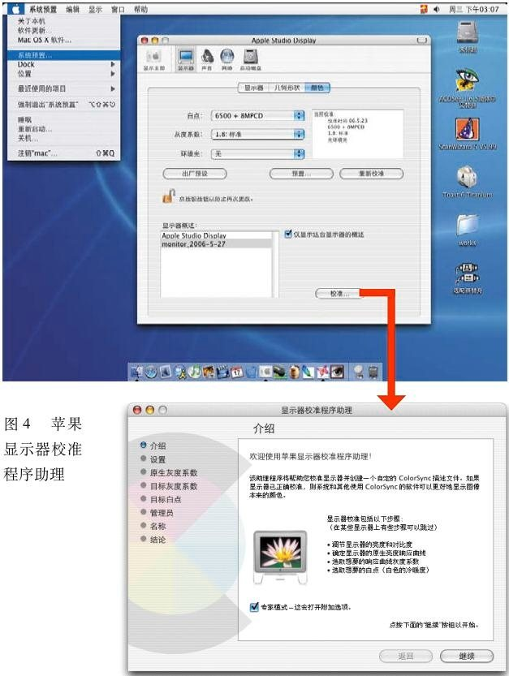
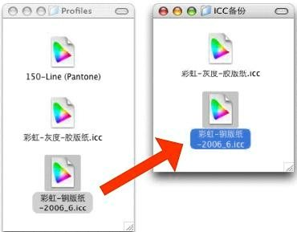
Study cues
- Why should you shut out daylight when calibrating, and wait at least half an hour after switching on the monitor? Which of 5000K and 6500K would you fix on?
- Why is an ordinary fluorescent lamp with a colour rendering index only in the seventies unsuitable for comparing proofs with the screen?
印前輸出培訓參考：全綵教程-200P
Scope. This is a training reference for prepress output. It starts from plates, inks, paper and surface chemistry, then moves on to halftone dots, linearisation and output settings, including saving PS files and page setup and registration marks in FounderType FIT. Use it before handing work to an output centre, to match materials and software settings on one checklist.
Main ideas
- CTP plates are divided by imaging method into photosensitive and thermal; photosensitive plates are further split into silver halide and photopolymer. Ink is made of pigment, binder (vehicle) and additives, and it dries by oxidation, absorption, evaporation, or UV or heat curing.
- Sheet-fed offset mostly uses inks that dry by oxidation, while web offset suits inks that dry by absorption. The drying method decides the paper and the schedule, not just the colour.
- Paper goes through pulping, papermaking, coating and converting. The papers commonly used for books, magazines and newspapers are newsprint, letterpress paper, offset (woodfree) paper and coated art paper: newsprint for newspapers and less demanding books, coated paper for colour pictorials, fine sample books and high-end labels.
- Halftone dots get their own section, right next to binding: sewn binding, wire stitching, thread sewing, saddle stitching and thread-sealed binding. Output needs to know how this sheet will finally be folded and bound.
- The output settings are very specific: make the page the same size as the file, do not use OPI, leave security at the default, print a linearisation report and save the linearisation file, and add alignment marks in FIT.
Methods
- Before output, write three lines: the plate type, how the ink dries, and which class the paper belongs to.
- Check against the book's output list: linearisation saved, PS saved, OPI off, registration marks added.
- When a photo looks dull, first work out whether the problem is the dots or the paper, then decide whether to rescan.
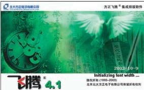
Study cues
- How do inks dry differently in sheet-fed offset and web offset? How does this affect what you expect of the paper and the schedule?
- Which kind of printed job in the book suits newsprint, offset paper and coated paper respectively? Which should your project use?
嶄新印通拼版教程
Scope. This is an imposition tutorial for Zhanxin Yintong V6.5. The software aims to handle all four colours in a single imposition, impose a whole book in one go, and save film. The tutorial follows the File and Edit menus through press sheets, bleed, creep (binding-edge shift), work-and-turn short signatures and composite press sheets. Use it alongside the menus the first time you impose book signatures.
Main ideas
- The core features come down to three points: impose once and all four colours are done; a whole book can be imposed in one go; film can be saved automatically or by hand.
- The File menu separates projects, press-sheet LAY files, output to ImageHarbor, single- or double-page output to a laser printer, and PDF export. A PDF can be used to make an e-book, while film output carries separation data and whether each page is rotated.
- Bleed lets lines, images and text run beyond the page so that no white edge shows after trimming. You can change one page, or change four adjacent pages and then apply the setting to all pages.
- The spacing at the binding edge adjusts automatically with paper thickness: the higher the page number on the press sheet, the smaller this spacing. When the first signature already needs creep, you can set a custom page shift; short signatures can be set as the same work-and-turn job.
- Composite press sheets can be exported and reused later in a free-form press sheet. In the page frame size you can directly change the trim size, the bleed and whether transparency is enabled.
Methods
- Before opening the software, write down the binding method, page count and bleed. The rows and columns, page size and resolution in the press-sheet template follow from these three.
- Before outputting film or exporting a PDF, check the imposition with single- or double-page laser proofs.
- For thicker books, switch on binding-edge adjustment and check whether the inner pages slide into the gutter.
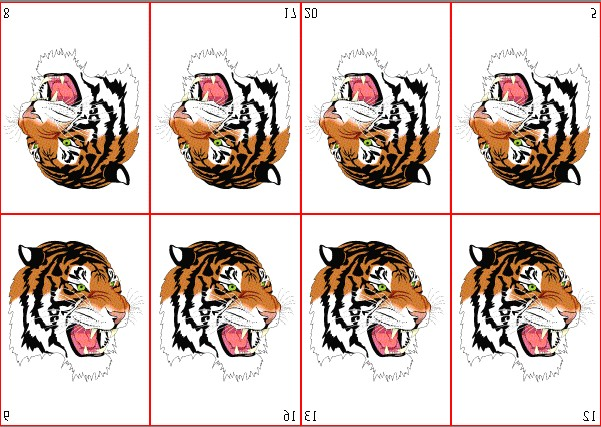
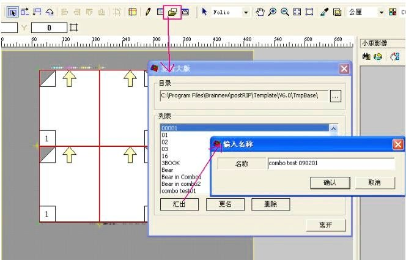
Study cues
- Bleed prevents white edges after trimming. What is the difference between changing the bleed on one page and applying the bleed of four adjacent pages to all of them?
- Why should the binding-edge spacing get smaller as the book gets thicker? When the first signature already needs creep, which command in the book should you use?
平版印刷拼版手冊
Scope. This is an illustrated imposition handbook for sheet-fed offset. Each entry is named by binding, press, page count and folding method, for example saddle-stitched work-and-tumble, perfect-bound head-to-head, cover with fold-out flap, and accordion fold, and gives formulas for the width and height of the cut sheet. Use it when imposing a cover or signatures, to copy the allowances from the diagram rather than leaving space by feel.
Main ideas
- Each diagram puts the binding and folding method in its title: head-aligned or foot-aligned, work-and-tumble or sheetwise, vertical three-panel fold or mixed fold. Pick the wrong title and every millimetre figure after it will be wrong.
- Bleed is usually 3 mm on each side, and some schemes allow 5 mm. The gripper edge on covers is mostly 11 to 12 mm; if the cover is to be varnished, UV coated or laminated, the tail edge must be at least 5 mm and the side lay margin no less than 5 mm, or the lamination will not reach the edge.
- A perfect-bound cover must add the spine width: the thickness of the book block plus about 1 mm of glue. On a six-page cover, the outer and inner fold-out flaps also have to be shortened by formula so they can fold in.
- Some web and folding schemes state the paper: coated and offset papers of 105 gsm or less. With thicker paper, you have to choose another folding method.
- The fold mark must go on the correct side so the imposition software can add it automatically. Head-aligned and foot-aligned are different diagrams and cannot be mixed.
Methods
- Decide the binding first, then find the matching diagram and put the finished width and height into its cut-sheet formula.
- If the cover is to be laminated or UV coated, first set the tail edge and side lay to the book's minimums, then draw the trim lines.
- Write on the sketch whether it is head-aligned or foot-aligned, and make sure the fold mark is on the side the software requires.
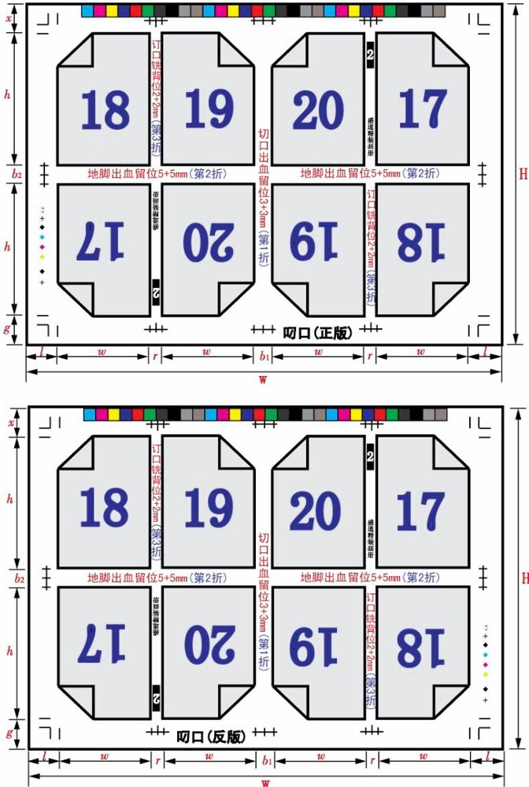
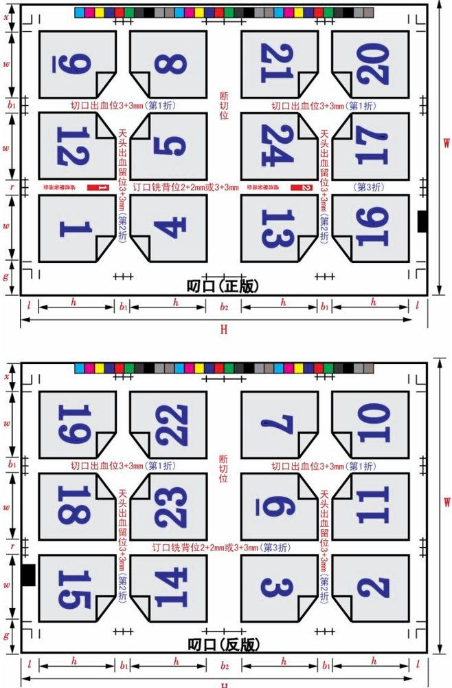
Study cues
- When a cover is to be laminated or UV coated, what is the minimum tail edge and side lay? What goes wrong if you leave too little?
- Which term differs between the cut-sheet width formulas for a saddle-stitched cover and a perfect-bound cover? What dimension of the book does that term represent?
平面設計及印刷業務人員常識備忘手冊
Scope. This is a file-delivery reminder for graphic designers and print sales staff. It focuses on the checks to make before output: gradients, fonts, RGB to CMYK conversion, spot colour names, setting sizes numerically, setting pages to the finished trim size, collecting fonts and images, and running a preflight. Use it as a checklist before sending files to an output centre.
Main ideas
- Gradients tend to show banding. The book's method is to build the gradient as a bitmap in Photoshop, add noise, and then place it in the layout software. A gradient from Illustrator processed through Photoshop often has weaker midtones than one made directly in Photoshop.
- Output centres handle PostScript fonts better. A TrueType font with the same name will conflict and has to be downloaded to the RIP separately. Bold and italic must use the font's own weight or style, not a style command that fakes bold or slants the letters, or the effect will disappear when printed.
- Small type with thin strokes, such as very small Bodoni, should not be built from separated colours. If the registration is slightly off, the thin parts will show white.
- Convert RGB to CMYK before placing images in the layout software. Spot and process colours must not be set the wrong way round; colour names in Illustrator, FreeHand and the layout software must match, or a process colour will be treated as a spot colour and an extra plate will appear.
- Enter sizes as numbers. Set the page to the actual finished size and let the software generate the trim marks. When delivering files, include the images used and both the screen and outline fonts, then use a preflight tool to check for missing pages, wrong colours and PostScript errors.
Methods
- Every time you deliver files, run through these eight items: gradients, fonts, CMYK, colour names, numerical sizes, finished-size pages, collected folder, preflight report.
- Output a set of separation proofs and check whether there is an extra spot colour plate you did not order.
- If a typeface has no bold weight, use a rule or a second colour for emphasis instead of the bold command.
Study cues
- Why should you not rely on the "Bold" or "Italic" command in the font menu to make text bold? What do you actually get after output?
- How does setting a spot colour as a process colour, or a process colour as a spot colour, affect a set of films? Which name should you check before delivering files?
書籍設計
Original title: Book Design
Scope. This book runs from "what is a book" to how a book is born. The first part covers the origins, definition and commercial value of the book and the influence of printing. Next come the roles in publishing, from author, agent, publisher and book developer to commissioning editor, editor, proofreader and consultant. Only then come the designer's drawing board, text and image, and production. Use it to understand where the designer stands in the whole production chain.
Main ideas
- Format starts with folding. Fold a sheet once and you get four pages, called a folio; fold it again and you get eight pages, called a quarto. Before a format becomes a style, it is a fold of paper.
- A chain of roles brings a book into being. The text a designer receives has already passed through the author, the agent, the publisher and several levels of editor. Only when you know who has the right to change the content do you know how far your design can go.
- Text and image share one chapter. If a cover takes a stylistic approach, the content should be its visual starting point, keeping a balance between the spirit of the author's original work and the designer's personal creativity. The book's example uses hazy poetic imagery to give readers something to ponder.
- The production chapter describes CMYK as a sequence of steps: the paper passes in turn through four sets of blanket and impression cylinders, printing halftone images and solid text in register.
- So the book designer's drawing board includes people, pages and the printing press, not just the cover.
Methods
- Fold a sheet of paper twice, label the folio and the quarto, and mark which edge is the head.
- List the roles involved in this project, and note who has to approve the cover.
- When making a stylised cover, write two sentences: one on the spirit of the book, one on the creative idea you want to add. Check that the two do not cancel each other out.
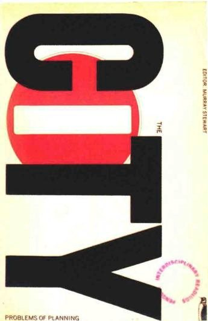
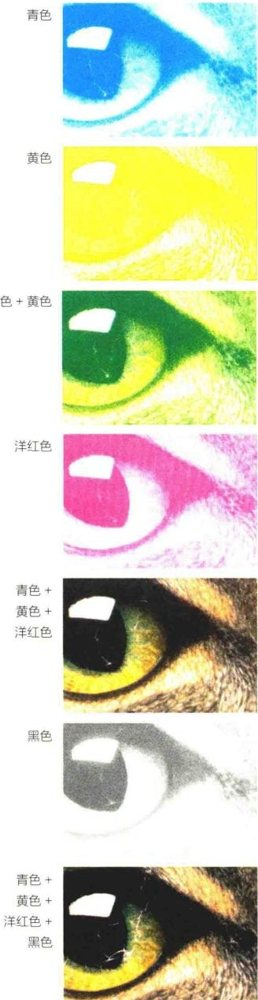
Study cues
- How many pages do you get when you fold a sheet once, and then once more? How does this relate directly to "folio" and "quarto"?
- When a cover carries a strong personal style from the designer, what does the book remind you to keep hold of? Write two sentences about the book you are working on: one on what the content needs, one on what you want to add.
書藝問道
Author: Lü Jingren
Scope. This is a collection of Lü Jingren's writings on book design. It runs from bronze inscriptions, bamboo slips, wooden tablets, silk and scrolls to leaf binding and butterfly binding, then sets out his own concepts: the five senses of the book, "book architecture" (shuzhu), editorial design before layout, binding last, and design that is worth what it costs. Use it to break the habit of thinking "book design means designing the cover".
Main ideas
- Once you receive a text, there are three steps. The first is editorial design: take the text apart like a film director, and work with the author, editor and production to find a way of telling it. The second is layout design: type, type size, images, space, the rhythm of grey tones, and hierarchy. Binding is the last step, and the three steps must still echo one another.
- The five senses anticipate what readers feel when they pick up the book: sight, the smell of ink and paper, the feel in the hand, the sound of turning pages and the voice reading in your head, and the taste for the book's character. Reading a paper book includes its form, its touch and interaction, not just recognising words.
- He uses the phrase from 《考工記》, "the right season, the energy of the land, fine materials, skilled work", to argue that art and craft must come together. Tradition should be carried on by making something new from the old: neither copying the ancients nor taking Western methods as the only standard.
- Information visualisation in books turns the order and logic of information into a language that is easy to grasp and remember. What the designer builds for readers is a reading space.
- Design should be worth what it costs. Digital communication is convenient, but it also means editors no longer meet in person; he stresses the human warmth in passing a manuscript along. The book's examples include the dragon-scale binding of 《三十二篆體金剛般若波羅蜜經》, an Olympic photo book shaped like the Water Cube, and Zhu Yingchun's 《蟻吃》.
Methods
- Take a new text through the three steps: first set the order of the narrative, then the rhythm of the pages, and only last decide what the binding lets the hand feel.
- Besides sight, choose one more sense, and state which paper, ink or way of turning pages creates it.
- If you borrow a traditional binding, write down what is new about it this time, not just its old name.
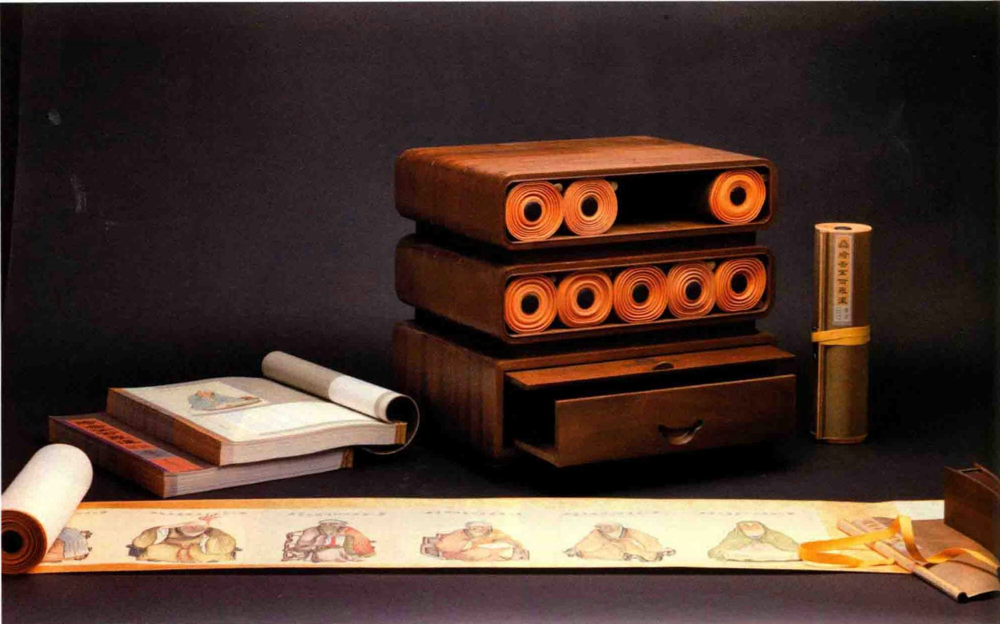
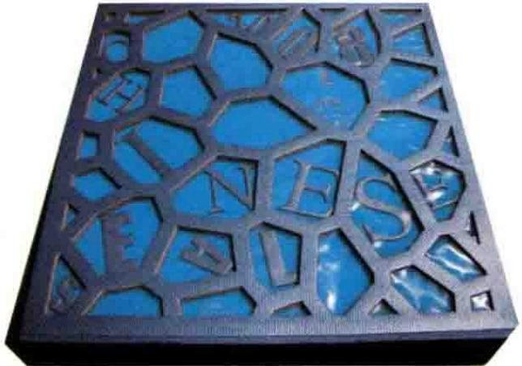
Study cues
- What are Lü Jingren's three steps after receiving a text? Why does binding come last?
- Of the five senses, besides sight, which one will your next book let readers meet? Does it depend on the paper, the ink, or the sound of turning pages?
現代圖書設計
Original title: New Book Design
Scope. This is a translated introduction to contemporary book design. Its contents are divided into Packaging, Navigation, Structure, Special Features, a Glossary and an Index. It interviews the publisher Lars Müller and the designers Derek Birdsall and Irma Boom, and uses materials, binding and belly bands to discuss examples that turn the book into an object. Use it to tell apart "books that can go on a shelf" and "books made once as works of art".
Main ideas
- Some books, together with their accessories, become objects. Helmut Newton's SUMO weighs tens of kilograms and comes with an aluminium stand designed by Philippe Starck; Irma Boom's book for SHV runs to more than two thousand pages, took several years of work with historians, and was a limited-edition gift.
- Uniqueness often comes from the material itself. Freitag uses recycled truck tarpaulin for its covers and bags, so every copy is different; Paul Smith's book has a synthetic resin slipcase, changes paper and printing within the text, and includes loose posters and a magnifying glass.
- The metal cover of Spoon bends into the curve of a spoon, and the inside pages bend with it. The design also disrupts the neat edges of the other books on the shelf.
- Most books are still bound by the limits of cover, format and binding. The business model of foreign editions keeps text layouts conservative. These unusual books mark the boundary; they are not everyday models.
- The interviews show positions. Birdsall did not give in to the temptations of computer typesetting at the time; Boom's books are the result of long collaboration. The glossary chapter is useful for checking binding terms.
Methods
- Sort the cases into "shelf books" and "object books". Borrow from object books only when the print run and budget really are special.
- When you see a metal, inflatable or cloth cover, write down how it changes the inside pages and the shelf, not just whether it looks good in the photo.
- When you read an interview, note which then-popular approach the designer rejected.
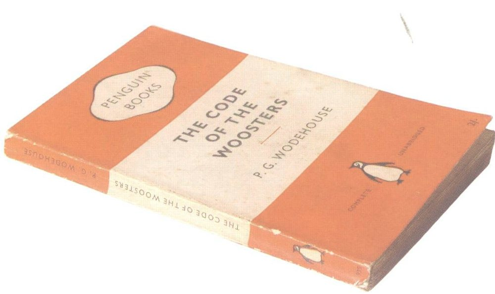
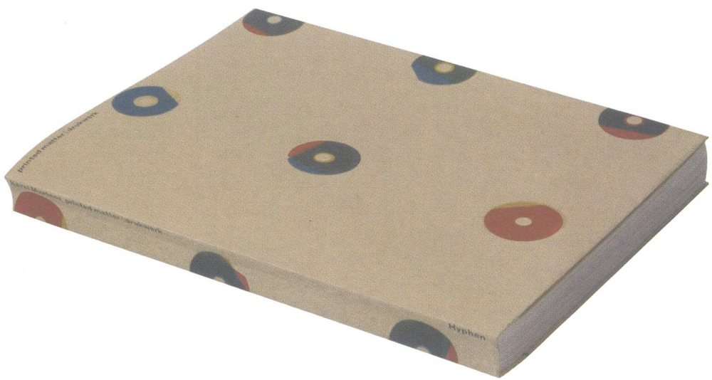
Study cues
- How does the curve of the metal cover of Spoon affect the inside pages? Is it still just cover decoration?
- Why, according to the book, are most book layouts still conservative? If your project has to sit on an ordinary shelf, which "every copy is different" approach would you give up?
範式革命：中國現代書籍設計的發端 1862-1937
Author: Zhao Jian
Scope. Borrowing Thomas Kuhn's concept of the paradigm, Zhao Jian studies how Chinese book design shifted from thread-bound books to paperbacks between 1862 and 1937. The book has four chapters: paradigm theory, the decline of the traditional paradigm, the paperback in the New Culture movement, and the foundations of early modern book design, covers, and the formation of "book binding and design" (zhuangzhen) as a profession. Use it to explain why a whole system of making books can be replaced.
Main ideas
- A paradigm here is the whole way a community copies, binds and reads books, including its signs, technology, physical form and distribution. The shift was driven by new ideas and by changes in social institutions from the late Qing onwards.
- The traditional paradigm covers the origins of the Chinese book, the social function of reproduction technology, physical forms, and carving and printing. As thread-bound publishing declined, Western learning brought new books. The preface names the key words of this history as "crisis" and "choice".
- The prelude to the paperback was the early Western-style book and a new publishing industry. The paperback is seen as a symbol of the New Culture, and the book also describes wrapped-back binding after the revolution and the basic structure of the paperback.
- The foundations of early modern design were new members of the metal type family and changes in page structure and reading habits. Covers moved from text to images, and cover art shows both "borrowing" (nalai, taking from abroad) and transformation.
- Only after "book binding and design" was given a name did it form a professional community. The plates show Tao Yuanqing's wire-stitched paperback and Feng Zikai's cover for 《文壇逸話》, as well as the 1911 cover of 《小説月報》 in 16mo format.
Methods
- When describing a historical book, fill in four boxes: who published it, what technology reproduced it, how it is bound, and what the cover is doing.
- Use "crisis" to frame your question: what new content could the old form no longer hold?
- Before making your own book, state which paradigm you stand in: the ritual of thread binding, the continuous reading of the paperback, or some point where the two join.
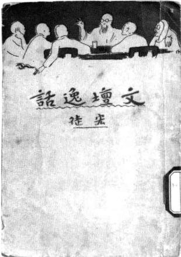
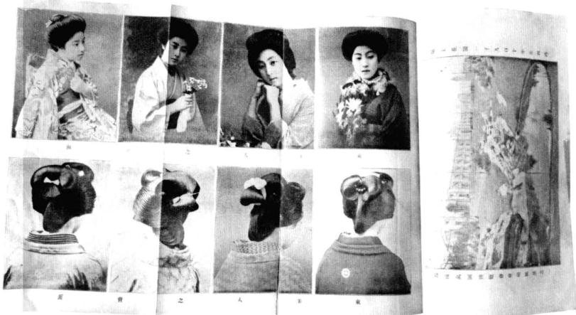
Study cues
- What kind of overall change in book design does Zhao Jian use Kuhn's "paradigm" to explain?
- After the thread-bound paradigm entered its crisis, what new habits appeared in paperback layouts and covers? Support your answer with a year or a work from the book.
電腦印前技術完全手冊（第2版）
Scope. This is the second edition of a hands-on manual for computer prepress, in two parts: image and text processing and output, and binding, imposition and worked examples. It describes a printed piece as ten stages, from taking the brief to printing, then grounds the process in specific jobs through InDesign examples of a poster, a newspaper and a book, plus appendices on paper sizes, folding, paper thickness and type size conversion.
Main ideas
- The ten stages are: taking the brief, input, adjustment, text, layout, saving, printing, output, proofing and press printing. They group into three processes: pre-production, layout and output. The book's chapters explain the terms in this order.
- Taking the brief is the stage where things most often go wrong. If sales staff are not familiar with production and printing, they may promise the client an effect the process cannot achieve. The book suggests that, where possible, a designer should listen to the client's requirements too, and then rewrite them into a plan that can actually be made.
- The materials a client hands over include text manuscripts and images or project files on various disks. The input stage has to decide separately on the scanning medium, scan type, mode, resolution, enlargement, filters and descreening.
- The second part covers imposition by type of job: 16mo single sheets and folded leaflets, covers, folders, business cards, tickets, cassette and CD inserts, mixed (gang) imposition, and how to calculate a magazine spine, followed by carrier bags and spot-colour packaging boxes.
- The appendices are tables to look up while working: international standard formats, paper sizes, folding styles, paper thickness, type sizes and point sizes, envelope sizes, and grammage conversion.
Methods
- Place the project you are working on within these ten stages, and mark which step you are on now. If a scan was not descreened, do not leave the fix until the output stage.
- When taking a brief, write the client's own words and your rewritten production process side by side, one sentence each.
- To calculate a spine, look up the thickness table; for tickets or cards, look at the mixed imposition examples. Do not force a signature diagram onto them.
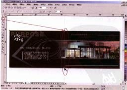
Study cues
- Write one sentence each turning taking the brief, input, layout and output into an action in this week's project. Which step is most likely to be committed to too early?
- Why should you think separately about descreening and resolution when scanning, instead of just dragging images into the layout?